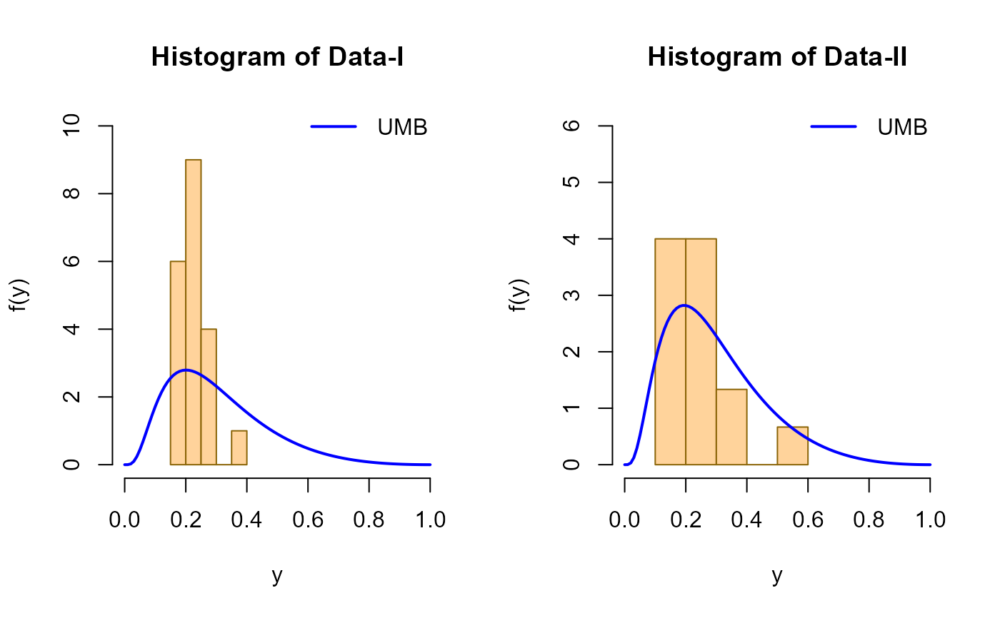
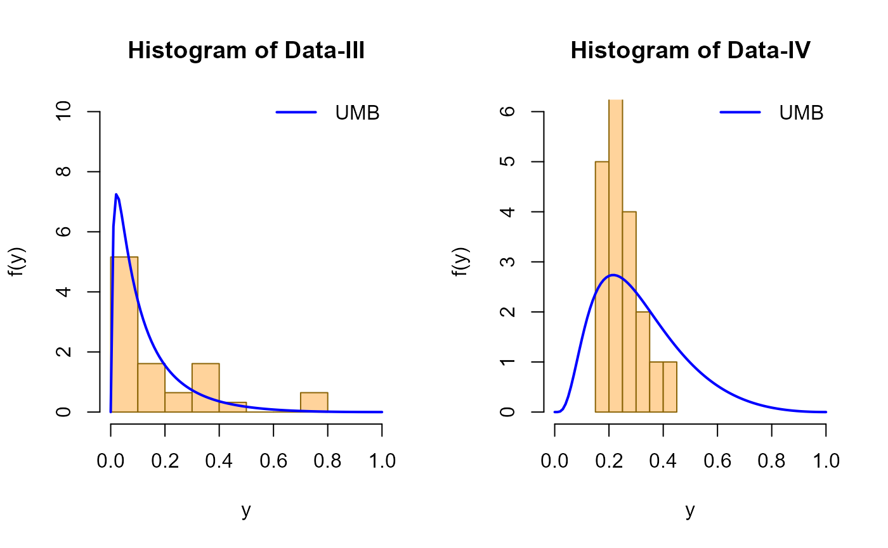

The function UMB() defines the Unit Maxwell-Boltzmann distribution, a one parameter
distribution, for a gamlss.family object to be used in GAMLSS fitting
using the function gamlss().
UMB(mu.link = "log")Returns a gamlss.family object which can be used to fit a UMB
distribution in the gamlss() function.
The Unit Maxwell-Boltzmann distribution with parameter \(\mu\) has a support in \((0, 1)\) and density given by
\(f(x| \mu) = \frac{\sqrt(2/\pi) \log^2(1/x) \exp(-\frac{\log^2(1/x)}{2\mu^2})}{\mu^3 x} \)
for \(0 < x < 1\) and \(\mu > 0\).
Biçer, C., Bakouch, H. S., Biçer, H. D., Alomair, G., Hussain, T., y Almohisen, A. (2024). Unit Maxwell-Boltzmann Distribution and Its Application to Concentrations Pollutant Data. Axioms, 13(4), 226.
# Example 1
# Generating some random values with
# known mu
y <- rUMB(n=300, mu=0.5)
# Fitting the model
library(gamlss)
mod1 <- gamlss(y~1, family=UMB)
#> GAMLSS-RS iteration 1: Global Deviance = -271.1999
# Extracting the fitted values for mu
# using the inverse link function
exp(coef(mod1, what="mu"))
#> (Intercept)
#> 0.5097857
# Example 2
# Generating random values under some model
# A function to simulate a data set with Y ~ UMB
gendat <- function(n) {
x1 <- runif(n)
mu <- exp(-0.5 + 1 * x1)
y <- rUMB(n=n, mu=mu)
data.frame(y=y, x1=x1)
}
datos <- gendat(n=300)
mod2 <- gamlss(y~x1, family=UMB, data=datos)
#> GAMLSS-RS iteration 1: Global Deviance = -389.3838
#> GAMLSS-RS iteration 2: Global Deviance = -389.3839
summary(mod2)
#> Warning: summary: vcov has failed, option qr is used instead
#> ******************************************************************
#> Family: c("UMB", "Unit Maxwell-Boltzmann")
#>
#> Call: gamlss(formula = y ~ x1, family = UMB, data = datos)
#>
#> Fitting method: RS()
#>
#> ------------------------------------------------------------------
#> Mu link function: log
#> Mu Coefficients:
#> Estimate Std. Error t value Pr(>|t|)
#> (Intercept) -0.52642 0.05151 -10.22 <2e-16 ***
#> x1 1.06732 0.08675 12.30 <2e-16 ***
#> ---
#> Signif. codes: 0 '***' 0.001 '**' 0.01 '*' 0.05 '.' 0.1 ' ' 1
#>
#> ------------------------------------------------------------------
#> No. of observations in the fit: 300
#> Degrees of Freedom for the fit: 2
#> Residual Deg. of Freedom: 298
#> at cycle: 2
#>
#> Global Deviance: -389.3839
#> AIC: -385.3839
#> SBC: -377.9763
#> ******************************************************************
# Example 3
# The first dataset measured the concentration of air pollutant CO
# in Alberta, Canada from the Edmonton Central (downtown)
# Monitoring Unit (EDMU) station during 1995.
# Measurements are listed for the period 1976–1995.
# Taken from Bicer et al. (2024) page 12.
data1 <- c(0.19, 0.20, 0.20, 0.27, 0.30,
0.37, 0.30, 0.25, 0.23, 0.23,
0.26, 0.23, 0.19, 0.21, 0.20,
0.22, 0.21, 0.25, 0.25, 0.19)
mod3 <- gamlss(data1 ~ 1, family=UMB)
#> GAMLSS-RS iteration 1: Global Deviance = -38.5724
# Extracting the fitted values for mu
# using the inverse link function
exp(coef(mod3, what="mu"))
#> (Intercept)
#> 0.8452875
# Extraction of the log likelihood
logLik(mod3)
#> 'log Lik.' 19.28621 (df=1)
# Example 4
# The second data set measured air quality monitoring of the
# annual average concentration of the pollutant benzo(a)pyrene (BaP).
# The data were obtained from the Edmonton Central (downtown)
# Monitoring Unit (EDMU) location in Alberta, Canada, in 1995.
# Taken from Bicer et al. (2024) page 12.
data2 <- c(0.22, 0.20, 0.25, 0.15, 0.38,
0.18, 0.52, 0.27, 0.27, 0.27,
0.13, 0.15, 0.24, 0.37, 0.20)
mod4 <- gamlss(data2 ~ 1, family=UMB)
#> GAMLSS-RS iteration 1: Global Deviance = -24.86
# Extracting the fitted values for mu
# using the inverse link function
exp(coef(mod4, what="mu"))
#> (Intercept)
#> 0.8593051
# Extraction of the log likelihood
logLik(mod4)
#> 'log Lik.' 12.42998 (df=1)
# Replicating figure 5 from Bicer et al. (2024)
# Hist and estimated pdf of Data-I and Data-II
mu1 <- 0.8452875
mu2 <- 0.8593051
par(mfrow = c(1, 2))
# Data-I
hist(data1, freq = FALSE,
xlim = c(0, 1.0), ylim = c(0, 10),
main = "Histogram of Data-I",
xlab = "y", ylab = "f(y)",
col = "burlywood1",
border = "darkgoldenrod4")
curve(dUMB(x, mu = mu1), add = TRUE,
col = "blue", lwd = 2)
legend("topright", legend = c("UMB"),
col = c("blue"), lwd = 2, bty = "n")
# Data-II
hist(data2, freq = FALSE,
xlim = c(0, 1.0), ylim = c(0, 6),
main = "Histogram of Data-II",
xlab = "y", ylab = "f(y)",
col = "burlywood1",
border = "darkgoldenrod4")
curve(dUMB(x, mu = mu2), add = TRUE,
col = "blue", lwd = 2)
legend("topright",
legend = c("UMB"),
col = c("blue"),
lwd = 2,
bty = "n")

par(mfrow = c(1, 1))
# Example 5
# The third dataset measured the concentration of sulphate
# in Calgary from 31 different periods during 1995.
# Taken from Bicer et al. (2024) page 13.
data3 <- c(0.048, 0.013, 0.040, 0.082, 0.073, 0.732, 0.302,
0.728, 0.305, 0.322, 0.045, 0.261, 0.192,
0.357, 0.022, 0.143, 0.208, 0.104, 0.330, 0.453,
0.135, 0.114, 0.049, 0.011, 0.008, 0.037, 0.034,
0.015, 0.028, 0.069, 0.029)
mod5 <- gamlss(data3 ~ 1, family=UMB)
#> GAMLSS-RS iteration 1: Global Deviance = -46.7013
# Extracting the fitted values for mu
# using the inverse link function
exp(coef(mod5, what="mu"))
#> (Intercept)
#> 1.582003
# Extraction of the log likelihood
logLik(mod5)
#> 'log Lik.' 23.35066 (df=1)
# Example 6
# The fourth dataset measured the concentration of pollutant CO in Alberta, Canada
# from the Calgary northwest (residential) monitoring unit (CRMU) station during 1995.
# Measurements are listed for the period 1976-95.
# Taken from Bicer et al. (2024) page 13.
data4 <- c(0.16, 0.19, 0.24, 0.25, 0.30, 0.41, 0.40,
0.33, 0.23, 0.27, 0.30, 0.32, 0.26, 0.25,
0.22, 0.22, 0.18, 0.18, 0.20, 0.23)
mod6 <- gamlss(data4 ~ 1, family=UMB)
#> GAMLSS-RS iteration 1: Global Deviance = -35.9771
# Extracting the fitted values for mu
# using the inverse link function
exp(coef(mod6, what="mu"))
#> (Intercept)
#> 0.8161202
# Extraction of the log likelihood
logLik(mod6)
#> 'log Lik.' 17.98855 (df=1)
# Replicating figure 6 from Bicer et al. (2024)
# Hist and estimated pdf of Data-III and Data-IV
mu3 <- 1.582003
mu4 <- 0.8161202
par(mfrow = c(1, 2))
# Data-III
hist(data3, freq = FALSE,
xlim = c(0, 1.0), ylim = c(0, 10),
main = "Histogram of Data-III",
xlab = "y", ylab = "f(y)",
col = "burlywood1",
border = "darkgoldenrod4")
curve(dUMB(x, mu = mu3), add = TRUE,
col = "blue", lwd = 2)
legend("topright", legend = c("UMB"),
col = c("blue"), lwd = 2, bty = "n")
# Data-IV
hist(data4, freq = FALSE,
xlim = c(0, 1.0), ylim = c(0, 6),
main = "Histogram of Data-IV",
xlab = "y", ylab = "f(y)",
col = "burlywood1",
border = "darkgoldenrod4")
curve(dUMB(x, mu = mu4), add = TRUE,
col = "blue", lwd = 2)
legend("topright",
legend = c("UMB"),
col = c("blue"),
lwd = 2,
bty = "n")

par(mfrow = c(1, 1))